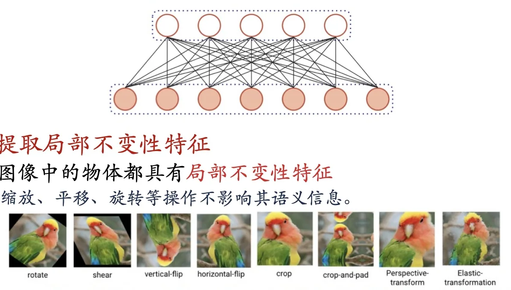
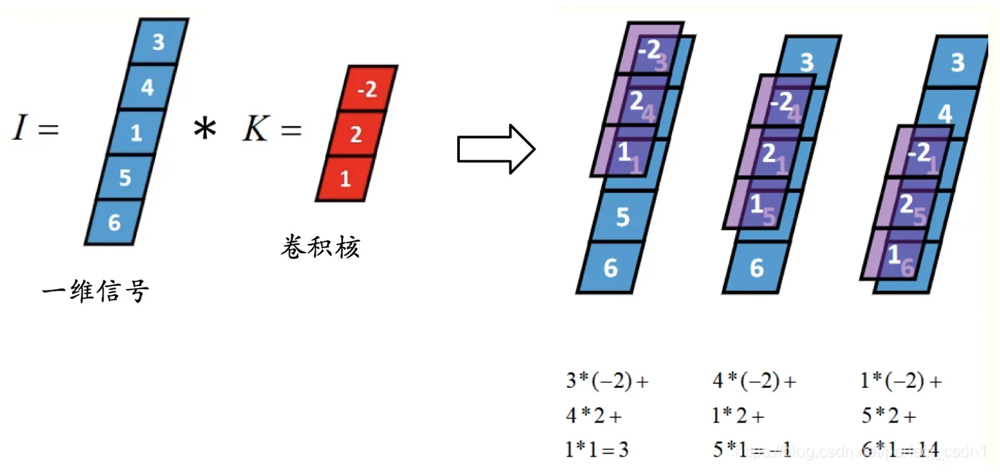
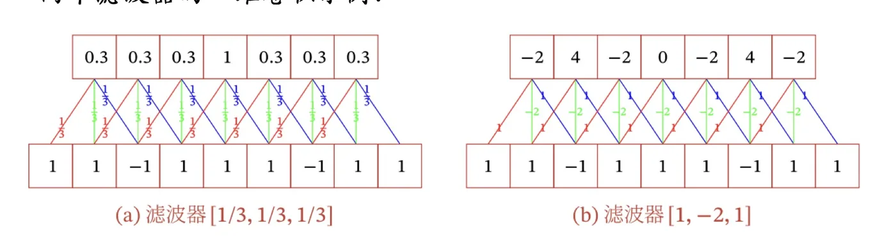
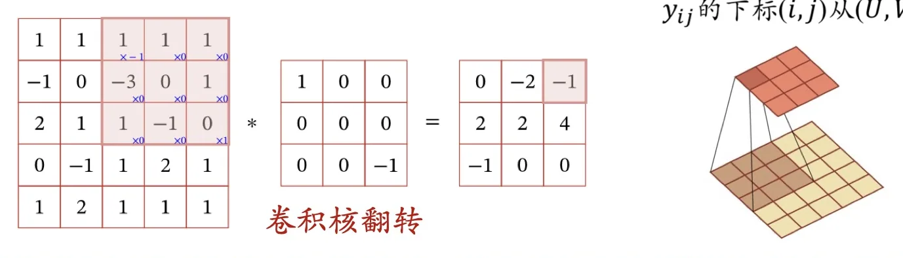
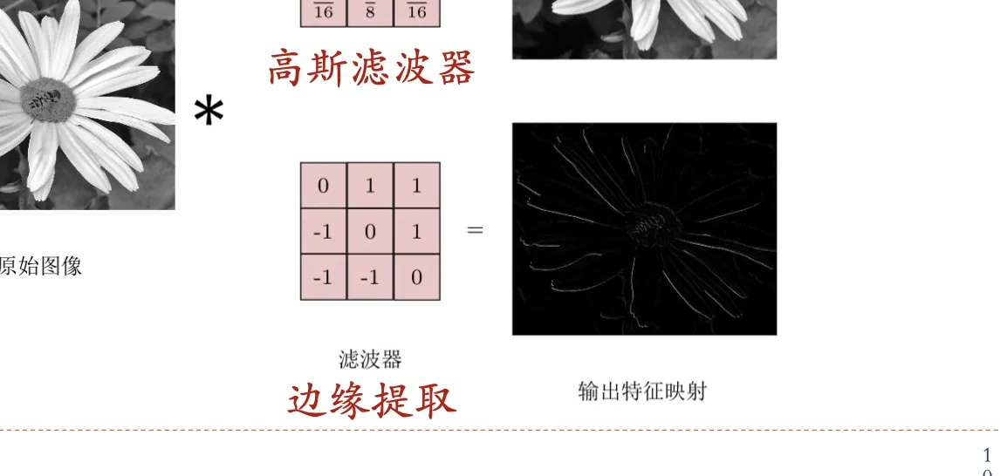
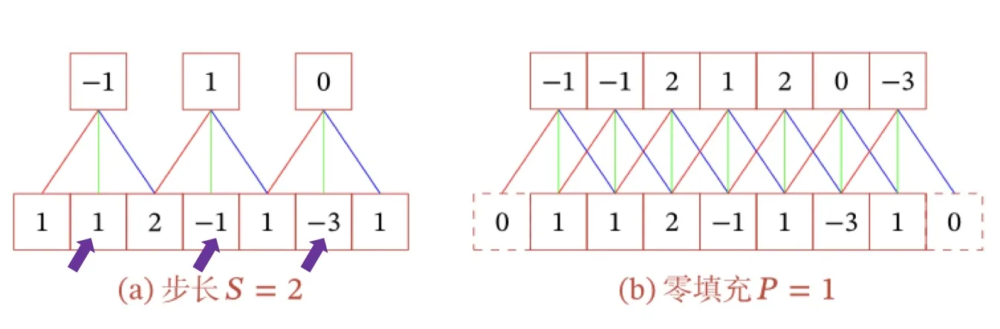
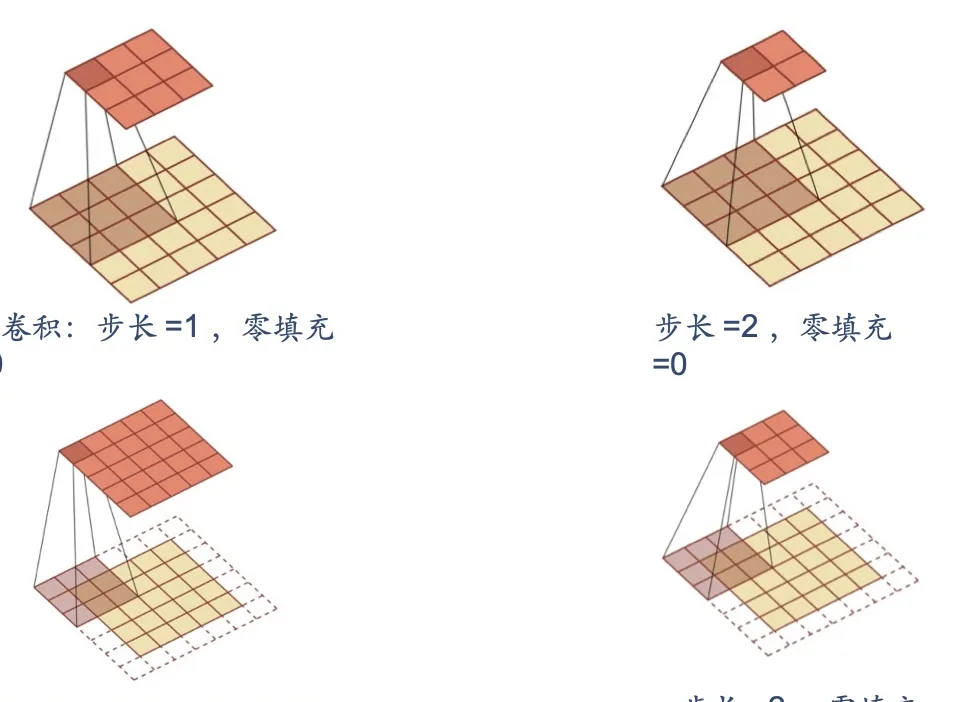

计算机视觉 · 第 6 章 卷积神经网络
6.1 卷积
卷积是卷积神经网络的基本运算，但它的出身并不在神经网络，而在信号处理。这一节要回答两件事：一是全连接网络处理图像到底卡在哪里、为什么非要用卷积；二是卷积本身怎么算——从一维信号上的卷积讲到图像上的二维卷积，再补上步长与零填充这两个「旋钮」，最后按输出长度把卷积分成窄卷积、宽卷积和等宽卷积三类。
1. 从全连接网络的困境说起
先看反面。如果把一幅图像直接展平成一个向量送进全连接前馈神经网络，会立刻遇到两个绕不开的困难。
第一个困难是权重矩阵的参数非常多。图像展平之后维度是「高 × 宽 × 通道数」，一幅中等大小的彩色图像就是一个十万量级的向量；哪怕第一层只放几百个神经元，这一层的权重矩阵也会膨胀到千万甚至上亿个参数。参数一多，训练效率就低，而且很容易过拟合——网络会把训练集里那些偶然的细节也一并记住。
第二个困难是很难提取局部不变性特征。自然图像中的物体都具有局部不变性：把物体稍微平移、缩放或者旋转一下，它的语义信息并没有变，还是同一只猫、同一辆车。但全连接网络把图像展平成一个长长的向量，每个像素落在向量的哪个位置上就被固定死了；图像一旦平移几个像素，整个输入向量就面目全非，网络看到的是一个「全新的样本」。

卷积神经网络（Convolutional Neural Networks，CNN）就是针对这两点提出的。它本质上仍是一种前馈神经网络，但受生物学上感受野（Receptive Field）机制的启发：一个神经元并不需要「看到」整幅图像，它只接受自己所支配的那一小块刺激区域内的信号。在视觉神经系统中，一个神经元的感受野就是视网膜上的一个特定区域，只有落在这个区域里的刺激才能激活它。
把这条生物学线索翻译成网络结构，就得到卷积神经网络的三个结构特性：
- 局部连接：每个神经元只与前一层中一个局部窗口内的神经元相连，而不是与所有神经元相连；
- 权重共享：同一个卷积核在整幅图像上滑动，图像不同位置共用同一组权重；
- 汇聚：在空间或时间上进行次采样，把相邻位置的响应合并起来。
这三个特性直接换来了两个结果：网络参数更少，并且具有一定程度上的平移、缩放和旋转不变性。局部连接和权重共享把参数量压了下来，汇聚则进一步把「位置上的细微差别」抹平——这正是后面 6.2 节要展开的内容。
2. 卷积的定义
卷积（Convolution）是通过两个函数 f 和 g 生成第三个函数的一种数学算子，它表征的是函数 f 与经过翻转和平移的 g 的乘积函数所围成的曲边梯形的面积。写成积分就是
(f ∗ g)(x) = ∫ f(τ) g(x − τ) dτ
式子里有两个动作值得盯住：先把 g 翻转成 g(−τ)，再把它平移 x，然后与 f 逐点相乘、求面积。也就是说，卷积描述的是「一个函数在另一个函数上滑动并叠加」的过程——滑动、相乘、求和，这三个动作正是后面一维卷积和二维卷积的全部内容。
在不同的场景下，卷积的维数不同：在信号处理中经常使用一维卷积，在图像处理中经常使用二维卷积。这一节先看一维，再看二维，思路是完全一样的。
3. 一维卷积：信号上的滑动加权
一维卷积经常用在信号处理中，用来计算信号延迟累积。课件给了一个直观的设定：假设一个信号发生器在每个时刻 t 产生一个信号 Xt，而这个信号的信息衰减率为 wk——经过 k − 1 个时间步长之后，信息只剩下原来的 wk 倍。若取 w1 = 1、w2 = 1/2、w3 = 1/4，那么在时刻 t 收到的信号 Vt，就是「当前时刻产生的信息」与「以前各时刻延迟过来的信息」的叠加：
Vt = w1Xt + w2Xt−1 + w3Xt−2 = Σk=1K wkXt−k+1
把这个式子一般化：假设滤波器长度为 K，它和一个信号序列 X1, X2, … 做卷积，结果就是上面那个求和式，其中 Vt 的下标 t 从 K 开始——因为滤波器长度是 K，它至少要「盖住」K 个输入才能算出第一个有效输出。这里的 w1, w2, …, wK 就称为滤波器或卷积核。

请注意这里的两个关键词。一是滑动：同一个卷积核在信号的不同位置上重复使用，这正是 6.1 节开头所说的权重共享。二是加权求和：卷积核里的每个数字就是一个权重，它决定了这个位置上的输入对输出贡献多少。
换一个卷积核，就换了一种「看法」。课件用两个滤波器做了一维卷积的对比示例：

滤波器 [1/3, 1/3, 1/3] 把相邻三个时刻的信号取平均，信号中缓慢变化的趋势被保留下来，因此它提取低频信息；滤波器 [1, −2, 1] 则把中间时刻的信号减去两侧信号，只有信号「变化剧烈」的地方才会得到较大的响应，因此它提取高频信息。这里的高频和低频，指的就是信号变化的强烈程度。这一点非常关键：卷积核的内容决定了它提取什么特征，而卷积核的具体数值是网络自己学出来的。
4. 二维卷积：图像上的特征提取
图像是二维的，所以图像处理中更常用的是二维卷积。给定一个图像 X ∈ RM×N 和一个滤波器 W ∈ RU×V，一般 U ≪ M、V ≪ N，它们的卷积为
Vij = Σu=1U Σv=1V wuv Xi−u+1, j−v+1
与一维情形完全对应：滤波器在图像上从左到右、从上到下滑动，每到一个位置就把滤波器与它覆盖的那一小块图像对应位置相乘、再全部相加，得到输出特征图上的一个值。公式里 Vij 的下标 (i, j) 从 (U, V) 开始，原因和一维卷积中 Vt 的下标从 K 开始一样——滤波器至少要完整盖住 U 行 V 列，才能算出第一个有效输出。

回过头看定义就会明白「卷积核翻转」是怎么来的：卷积的定义要求 g 先翻转再平移，所以严格意义上的卷积要把卷积核上下、左右各翻转一次再做加权求和。在信号处理里这个翻转是定义的一部分；而到了卷积神经网络里，由于卷积核的数值本来就是学出来的，翻不翻转只会得到一组「镜像」的权重，因此工程实现中常常省略这一步，只做局部加权求和——习惯上仍然把它叫做卷积。
二维卷积经常作为特征提取的有效方法。课件举了两个方向相反的例子：

高斯滤波器的权重按二维高斯分布排列，中心大、四周小，相当于对邻域做加权平均，因此它平滑图像、抑制噪声；边缘提取算子则是中心为正、四周为负，只有灰度发生突变的地方（也就是边缘）才会得到较大的响应。这与一维卷积中 [1/3, 1/3, 1/3] 与 [1, −2, 1] 的分工是同一回事：低通滤波器管平滑，高通滤波器管边缘。第 3 章的边缘检测用到的正是这一类算子。
5. 卷积的变种：步长与零填充
在卷积的标准定义基础上，还可以引入卷积核的滑动步长和零填充来增加卷积的多样性，从而更灵活地进行特征提取。
- 步长（Stride）：卷积核在滑动时的时间间隔。步长为 1 表示每次移动一格，步长为 2 表示每次跳过一格。步长越大，卷积核在图像上停留的位置越少，输出尺寸越小。
- 零填充（Zero Padding）：在输入向量两端（图像则是四周）进行补零。补零让滤波器的中心能够落在图像的边缘像素上，从而保住边缘信息，同时也用来调节输出尺寸。

这两个「旋钮」的直接后果是输出尺寸变了。记输入序列长度为 M、卷积核大小为 K、步长为 S、两端各填补 P 个 0，那么卷积后的输出长度是
⌊(M − K + 2P) / S⌋ + 1
其中 ⌊·⌋ 表示向下取整。二维情形与之相同，只是两个方向各算一次：输入矩阵为 W × H、卷积核大小为 K × K、步长为 S、四周各填补 P 个 0，那么输出矩阵就是 ⌊(W − K + 2P) / S + 1⌋ × ⌊(H − K + 2P) / S + 1⌋。这个公式在后面的网络结构里会反复用到——每一层的特征图尺寸都可以由它推出来。
6. 窄卷积、宽卷积与等宽卷积
固定步长 S = 1，只让零填充 P 变化，卷积结果按输出长度不同可以分为三类，这也是卷积神经网络里最常用的一组概念：
| 卷积类型 | 步长 S | 零填充 P | 输出长度 |
|---|---|---|---|
| 窄卷积 | 1 | 0 | M − K + 1 |
| 宽卷积 | 1 | K − 1 | M + K − 1 |
| 等宽卷积 | 1 | (K − 1) / 2 | M |
三者的名字恰好说明了它们的输出有多「宽」：窄卷积不补零，输出比输入短，是最直观的卷积；宽卷积两端各补 K − 1 个零，输出比输入还长，相当于让卷积核在输入之外也「走」一遍；等宽卷积的填充量取 (K − 1)/2，输出长度与输入相同，因此在需要保持特征图尺寸不变的网络（例如后面要讲的残差网络）里用得最多。

把这两节连起来看：卷积核决定「提取什么」，步长和零填充决定「在哪些位置提取、输出多大」。前者是学出来的参数，后者是设计网络时人为选定的超参数——这也是为什么后面讲各种经典网络时，总要逐个交代每一层的卷积核大小、步长和填充。
本节小结
- 全连接前馈神经网络处理图像有两个困难：权重矩阵的参数非常多（训练效率低、易过拟合），以及很难提取局部不变性特征（平移、缩放、旋转会彻底改变展平后的输入向量）。
- 卷积神经网络受生物学上感受野机制启发，具有三个结构特性：局部连接、权重共享、汇聚（空间或时间上的次采样），因此参数更少，并具有一定程度上的平移、缩放和旋转不变性。
- 卷积是用两个函数 f 和 g 生成第三个函数的数学算子，表征 f 与「经过翻转和平移的 g」的乘积所围成的曲边梯形面积；信号处理中常用一维卷积，图像处理中常用二维卷积。
- 一维卷积 Vt = Σk=1K wkXt−k+1（t 从 K 开始）；二维卷积 Vij = Σu Σv wuvXi−u+1, j−v+1（(i, j) 从 (U, V) 开始）。卷积核的内容决定它提取什么特征：[1/3, 1/3, 1/3] 一类的低通核做平滑，[1, −2, 1]、边缘提取算子一类的高通核取边缘。
- 步长（Stride）控制卷积核滑动的时间间隔，零填充（Zero Padding）在输入两端补零；输出长度为 ⌊(M − K + 2P) / S⌋ + 1，二维时两个方向各算一次。
- 步长取 1 时按零填充把卷积分成三类：窄卷积（P = 0，输出 M − K + 1）、宽卷积（P = K − 1，输出 M + K − 1）、等宽卷积（P = (K − 1)/2，输出 M）。